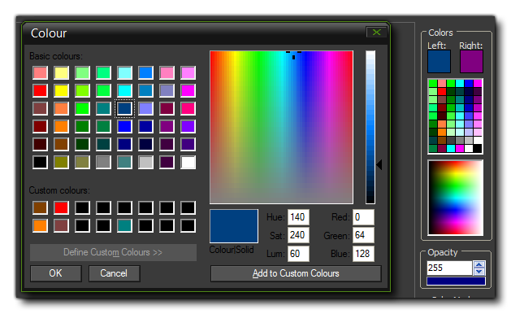
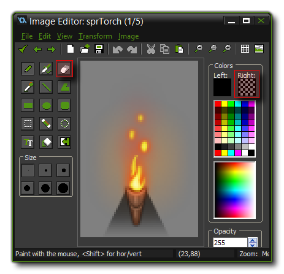

Apart from the tools listed on the page covering the Image Editor, there are also a
number of advanced tools available to you to make editing sprites
and backgrounds easier. These tools are listed below.
The Scratch Page addition enables you to store parts of images
that have been cut out, or draw your own temporary images and
manipulate them, away from the main sprite frame being edited.
Think of it as a sort of "scratch pad", where you can test or
change things without fear of editing the actual sprite itself.
You can switch between the current animation frame and the scratch
page by pressing "J" on your keyboard and the scratch page
is treated exactly the same as any other image frame. You can cut
and paste images, use the built in effects and even save the
results out as a PNG file. However this scratch page image is not
stored with the sprite itself, and when you close the editor its
contents will be removed.
GameMaker: Studio permits you to define custom colours from the
colour checker box for the left or right mouse buttons for drawing.
However this approach is not very flexible and you need to recreate
the palette of custom colours each time you open the program when
using that method of colour mixing. However there is another way to
create your own custom palettes easily and save and load them as
you require. 
In the image editor you can see on the right of the window the
selection of colours available, and normally these are fixed hues.
But, if you middle-click on any of the default colours, you
will open up the colour mixer window (as happens when you click on
the left or right draw colours), only now you can create your own
colour and - without having to add it to the custom colours of this
window - and click "Okay" to have it saved as part of the default
palette you are working with in the main IDE.
Once you have created your custom palette, you can then save it out
from the File dialogue. There you will see the option to
Save Colour Palette which will save the palette as a
*.PAL file. You can then re-load it for use at any time
later from the same menu by using the Load Colour Palette
option. Note that the *.PAL file created is non-standard
so trying to load in palette files made with software other than
GameMaker: Studio will not work.
In the Image Editor, you can set the Eraser Tool to work
on the right mouse button instead of implicitly selecting it.
Normal behaviour is that you have the pencil tool and the eraser
tool and you switch between them from the buttons on the interface,
however if you right-click on the eraser tool button, it
will set the right colour of the mouse to be the eraser, with all
the same properties that have been assigned to that tool. This
means that you can draw with the left mouse and erase with the
right.  When
you have selected the right mouse erase option, you will see that
the right colour is now shown as a "checker-board" to show that you
are using it as an eraser instead of a pencil.